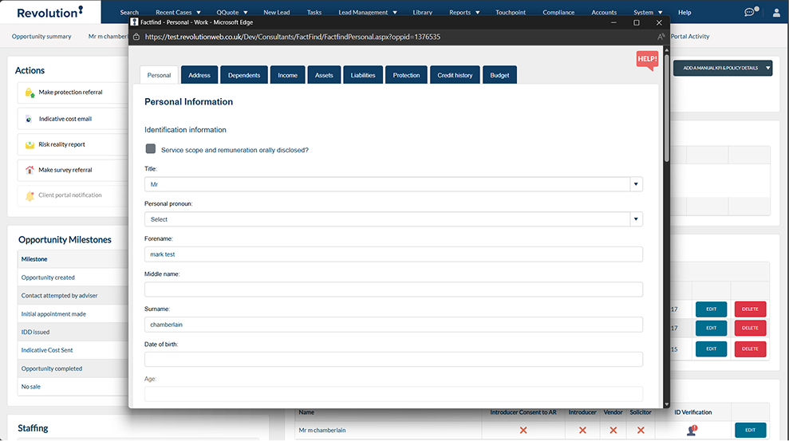
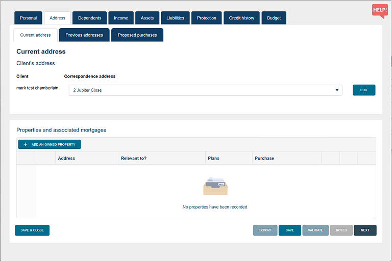
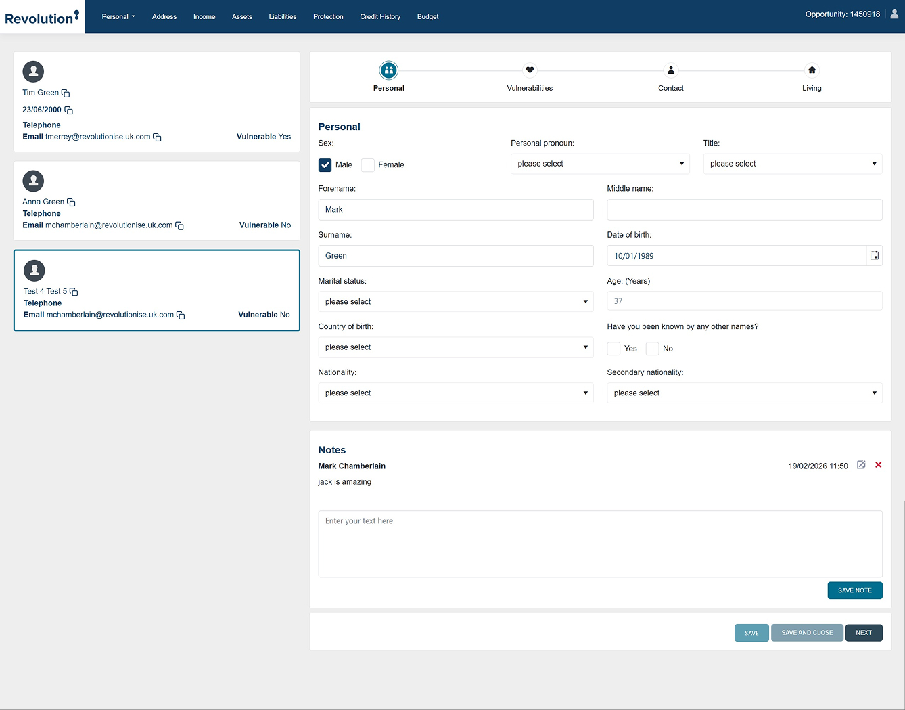
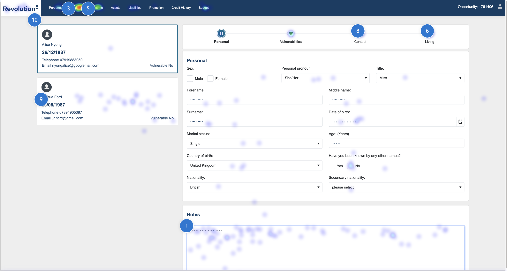
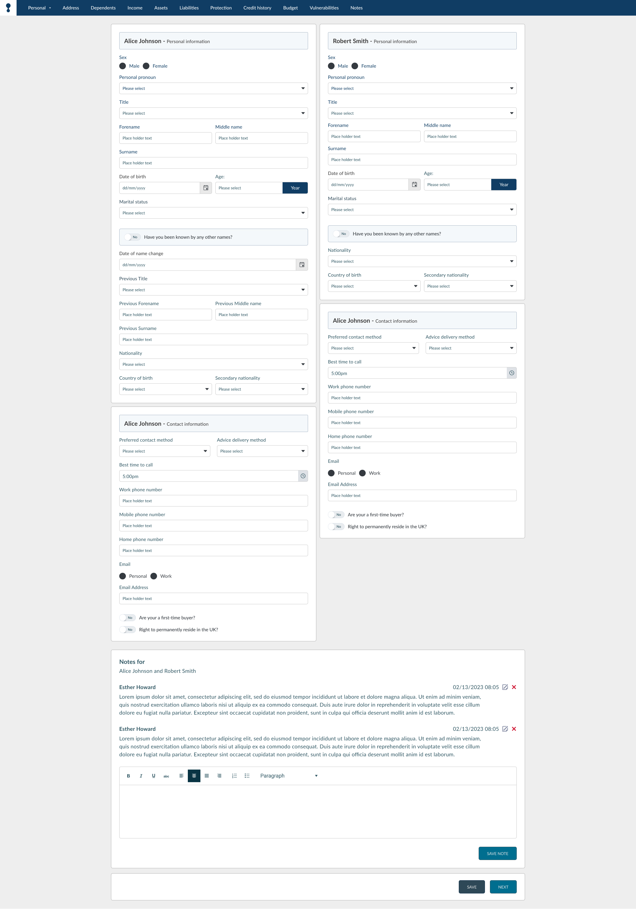
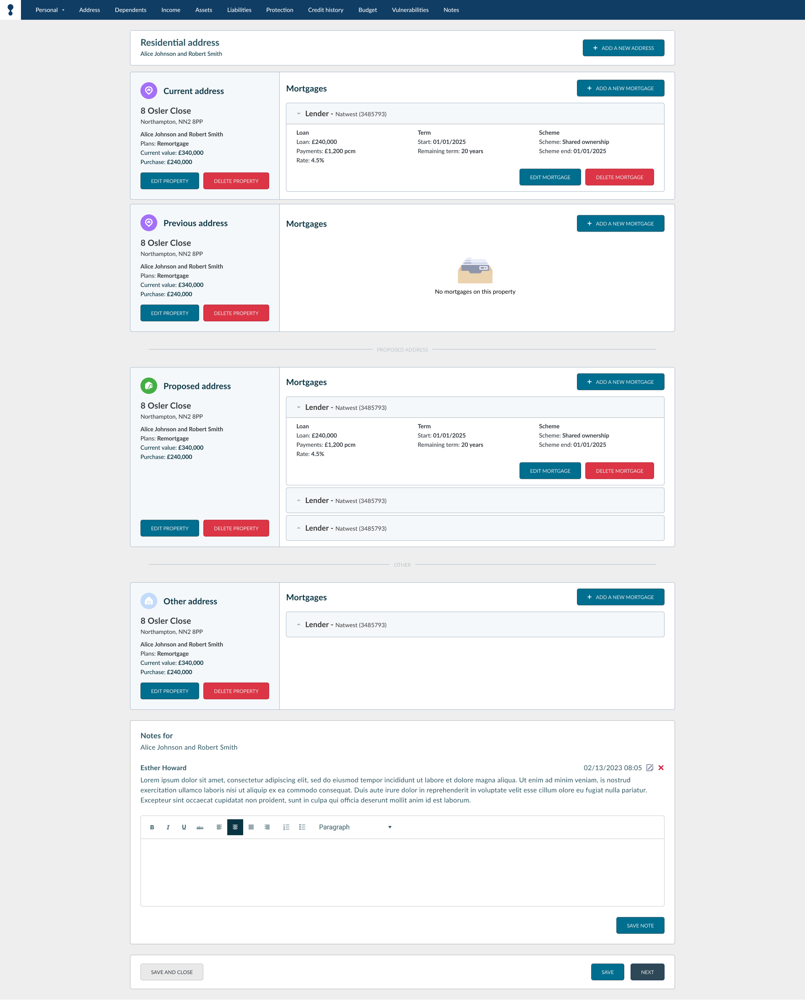

Fact Find UX:
From Guesswork to Data
Re-engineering a multi-page legacy system into a high-density intelligence workspace during a mission-critical tech stack migration.
1. The Legacy Transition
The original Fact Find was built on an aging VB stack. As we migrated to C# MVC, we seized the opportunity to build a new application that could support a partnership with Mortgage Brain. This required complex middleware to collect detailed data for API-driven quotes.
Initially, without user tracking or market research, we relied on "word of mouth" feedback from team leads—a process we realized was flawed as the project moved from XD to Figma amidst company restructuring and changing management.

Legacy VB Interface

Legacy Data Points
2. Iteration 1: The "Modern" Bloat
The first redesign expanded the footprint to allow for note-taking as users progressed. However, this phase was largely based on educated guesswork. It was only after a staged launch that I successfully integrated Microsoft Clarity, finally giving us the metrics to see exactly how, when, where, and why advisors were using the tool. We moved from guessing to observing.


3. Heatmap Analysis & User Discovery
We launched to a pilot company of 200 consultants. The reception was mixed; advisors felt the fragmented pages slowed their workflow. By analyzing heatmaps, I could show stakeholders and the SLT that "knee-jerk" reactions were dangerous—instead, we needed to consolidate. We met with consultants to dig beneath their complaints and identify the true friction points.

4. The Intelligence Workspace (v3)
Based on the data, we collapsed the "many pages" model back into high-density hubs. We introduced side-by-side data parity for dual applicants and refined the property section to handle multiple mortgages (1st, 2nd, and 3rd charges) without visual clutter. This "Cockpit" model is now being rolled out across other projects to standardize our understanding of user behavior.

v3: High-Density Side-by-Side Personal Hub

v3: Unified Multi-Charge Property Hub
Efficiency
60% Less Clicks
Scale
1,300+ Daily Users
Method
Metric Driven
Technical & Compliance Refinement
Consumer Duty Optimization
We strategically positioned Vulnerability Status between Budget and Notes. This ensures compliance with FCA standards by forcing a consideration of client health or financial resilience before the final audit note is recorded.
"Portal Paste" Interaction
By replacing hyperlinked contact fields with one-click copy buttons, we solved a major advisor frustration. This prevented accidental redirects to email clients when advisors simply needed to paste data into lender portals.